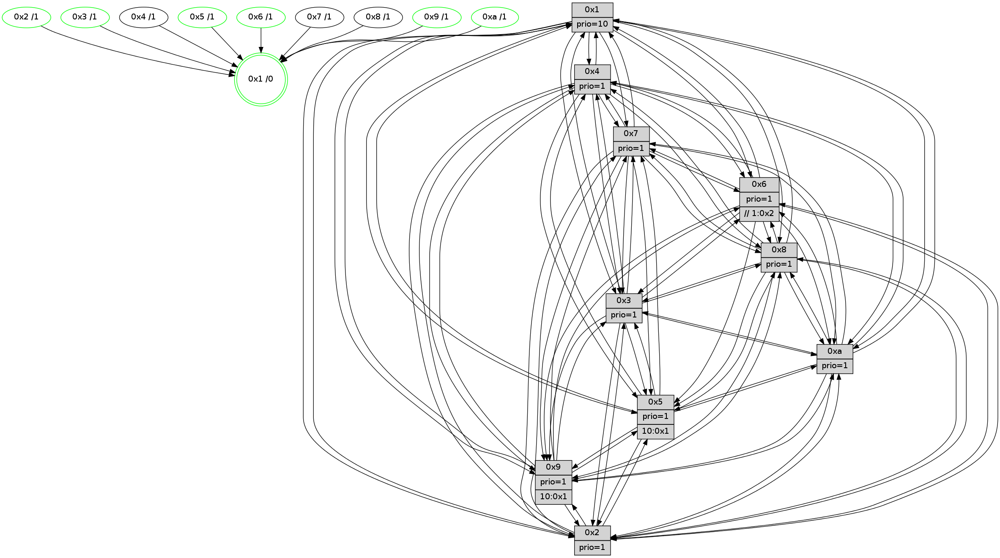

>> << IDX [start] -100 -25 -5 +0 +5 +25 +100 [1540.43652201]
 Previous packets
1535.009595 beacon08(faad) #0 coord=01,02,03,04,05,06,07,0a,09,08 cycle=688.0ms assoc 64 a2 83
1535.021147 [Hello(9): seq=922 sym=2,5,3,4,7,6,8,10,1 sysInfo=hasWarning stat=2:4,10,13,13/5:8,0,5,0/3:3,15,9,7/4:4,8,5,3/7:15,1,5,5/6:5,11,11,1/8:3,1,3,9/10:4,6,7,0/1:1,7,13,1]
1535.024619 [Hello(8): seq=922 sym=5,2,3,7,9,6,4,10,1 sysInfo=hasWarning stat=5:10,5,6,3/2:2,5,1,14/3:9,6,6,6/7:1,3,0,0/9:1,8,7,6/6:2,6,3,1/4:14,7,11,2/10:11,6,13,5/1:15,7,13,0]
1535.027747 [STC(8)->1 #0.274 to-color d=1]
1535.031469 [Color(1) seq=658 @0:0 prio=10]
1535.032747 [Hello(10): seq=911 sym=6,2,3,8,7,5,9,4,1 sysInfo=hasWarning stat=6:8,9,10,5/2:4,0,12,2/3:10,6,3,15/8:12,12,15,6/7:8,5,12,10/5:10,3,4,3/9:1,2,0,0/4:9,8,9,3/1:2,14,13,1]
1535.035934 [Hello(4): seq=978 sym=5,8,6,2,3,9,7,10,1 sysInfo=hasWarning stat=5:8,2,8,4/8:1,3,0,0/6:14,13,4,2/2:1,14,11,3/3:12,7,3,1/9:7,1,12,3/7:0,1,0,0/10:9,6,4,14/1:9,15,13,1]
1535.039697 [STC(4)->1 #0.274 to-color d=1]
1535.042006 [Hello(7): seq=978 sym=2,3,5,6,8,4,9,10,1 sysInfo=hasWarning stat=2:6,9,8,6/3:11,1,12,6/5:11,2,10,5/6:0,15,9,13/8:10,2,1,1/4:3,7,1,0/9:4,1,4,3/10:1,14,1,7/1:7,7,8,0]
1535.045799 [STC(7)->1 #0.274 to-color d=1]
----------------------------------------------------------------------
1535.707737 beacon01(faad) #0 coord=01,02,03,04,05,06,07,0a,09,08 cycle=688.0ms assoc
-- color-indic=1 64 f3 5d
1535.717720 beacon02(faad) #0 coord=01,02,03,04,05,06,07,0a,09,08 cycle=688.0ms assoc 64 60 6c
1535.727720 beacon03(faad) #0 coord=01,02,03,04,05,06,07,0a,09,08 cycle=688.0ms assoc 64 1a 21
1535.737719 beacon04(faad) #0 coord=01,02,03,04,05,06,07,0a,09,08 cycle=688.0ms assoc 64 6d cb
1535.747721 beacon05(faad) #0 coord=01,02,03,04,05,06,07,0a,09,08 cycle=688.0ms assoc 64 17 86
1535.757719 beacon06(faad) #0 coord=01,02,03,04,05,06,07,0a,09,08 cycle=688.0ms assoc 64 99 51
1535.767720 beacon07(faad) #0 coord=01,02,03,04,05,06,07,0a,09,08 cycle=688.0ms assoc 64 e3 1c
1535.777725 beacon0a(faad) #0 coord=01,02,03,04,05,06,07,0a,09,08 cycle=688.0ms assoc 64 92 17
1535.797725 beacon08(faad) #0 coord=01,02,03,04,05,06,07,0a,09,08 cycle=688.0ms assoc 64 66 8d
1535.810890 [Hello(1): seq=888 sym=4,2,9,5,10,3,8,6,7 sysInfo=coloring-mode-on,ColoringModeRequestCalled stat=4:9,2,10,4/2:10,6,2,7/9:15,0,3,3/5:4,14,10,11/10:11,6,13,8/3:3,6,10,13/8:2,0,4,7/6:14,0,6,3/7:8,3,13,3]
1535.816461 [Color(2) seq=555 @0:0 prio=1]
1535.821048 [Color(9) seq=522 @0:0 prio=1 >10.@1,1.@2,1.@3,1.@4]
1535.822667 [Color(6) seq=611 @0:0 prio=1 >>1.@2,1.@3,1.@4]
1535.824752 [Color(10) seq=568 @0:0 prio=1]
1535.826938 [Hello(5): seq=979 sym=7,4,3,1,9,8,10,2 sysInfo=hasWarning stat=7:7,6,15,1/4:2,13,5,0/3:9,11,5,3/1:15,0,6,0/9:13,5,10,12/8:11,5,5,8/10:6,15,14,9/2:10,2,3,9]
1535.830596 [Color(5) seq=515 @0:0 prio=1 >10.@1,1.@2,1.@3,1.@4]
----------------------------------------------------------------------
1536.495867 beacon01(faad) #0 coord=01,02,03,04,05,06,07,0a,09,08 cycle=688.0ms assoc
-- color-indic=1 64 4f 58
1536.505850 beacon02(faad) #0 coord=01,02,03,04,05,06,07,0a,09,08 cycle=688.0ms assoc 64 dc 69
1536.515850 beacon03(faad) #0 coord=01,02,03,04,05,06,07,0a,09,08 cycle=688.0ms assoc 64 a6 24
1536.525851 beacon04(faad) #0 coord=01,02,03,04,05,06,07,0a,09,08 cycle=688.0ms assoc 64 d1 ce
1536.535850 beacon05(faad) #0 coord=01,02,03,04,05,06,07,0a,09,08 cycle=688.0ms assoc 64 ab 83
1536.545851 beacon06(faad) #0 coord=01,02,03,04,05,06,07,0a,09,08 cycle=688.0ms assoc 64 25 54
1536.555852 beacon07(faad) #0 coord=01,02,03,04,05,06,07,0a,09,08 cycle=688.0ms assoc 64 5f 19
1536.565854 beacon0a(faad) #0 coord=01,02,03,04,05,06,07,0a,09,08 cycle=688.0ms assoc 64 2e 12
1536.585855 beacon08(faad) #0 coord=01,02,03,04,05,06,07,0a,09,08 cycle=688.0ms assoc 64 da 88
1536.597094 [Hello(9): seq=923 sym=2,5,3,4,7,6,8,10,1 sysInfo=hasWarning stat=2:4,10,13,13/5:9,1,5,0/3:3,15,9,7/4:5,8,6,3/7:0,1,6,5/6:5,12,11,1/8:4,1,4,9/10:5,7,7,0/1:2,8,13,1]
1536.600728 [Hello(10): seq=912 sym=6,2,3,8,7,5,9,4,1 sysInfo=hasWarning stat=6:8,9,10,5/2:4,0,12,2/3:10,6,3,15/8:12,12,15,6/7:9,5,13,10/5:11,4,4,3/9:1,2,0,0/4:10,8,10,3/1:3,14,13,1]
1536.604010 [Hello(8): seq=923 sym=5,2,3,7,9,6,4,10,1 sysInfo=hasWarning stat=5:11,6,6,3/2:3,6,1,14/3:9,6,6,6/7:2,3,1,0/9:1,9,7,6/6:3,7,3,1/4:15,7,12,2/10:12,7,13,5/1:0,8,13,0]
1536.606763 [Color(1) seq=659 @0:0 prio=10]
1536.608809 [Hello(7): seq=979 sym=2,3,5,6,8,4,9,10,1 sysInfo=hasWarning stat=2:7,10,8,6/3:11,1,12,6/5:12,3,10,5/6:1,0,9,13/8:10,2,1,1/4:3,7,1,0/9:4,2,4,3/10:1,15,1,7/1:8,7,8,0]
----------------------------------------------------------------------
1537.283999 beacon01(faad) #0 coord=01,02,03,04,05,06,07,0a,09,08 cycle=688.0ms assoc
-- color-indic=1 64 5b 36
1537.293982 beacon02(faad) #0 coord=01,02,03,04,05,06,07,0a,09,08 cycle=688.0ms assoc 64 c8 07
1537.303982 beacon03(faad) #0 coord=01,02,03,04,05,06,07,0a,09,08 cycle=688.0ms assoc 64 b2 4a
1537.313982 beacon04(faad) #0 coord=01,02,03,04,05,06,07,0a,09,08 cycle=688.0ms assoc 64 c5 a0
1537.323981 beacon05(faad) #0 coord=01,02,03,04,05,06,07,0a,09,08 cycle=688.0ms assoc 64 bf ed
1537.333983 beacon06(faad) #0 coord=01,02,03,04,05,06,07,0a,09,08 cycle=688.0ms assoc 64 31 3a
1537.343982 beacon07(faad) #0 coord=01,02,03,04,05,06,07,0a,09,08 cycle=688.0ms assoc 64 4b 77
1537.353986 beacon0a(faad) #0 coord=01,02,03,04,05,06,07,0a,09,08 cycle=688.0ms assoc 64 3a 7c
1537.373989 beacon08(faad) #0 coord=01,02,03,04,05,06,07,0a,09,08 cycle=688.0ms assoc 64 ce e6
1537.385882 [Hello(1): seq=889 sym=4,2,9,5,10,3,8,6,7 sysInfo=coloring-mode-on,ColoringModeRequestCalled stat=4:9,2,10,4/2:10,7,2,7/9:0,1,3,3/5:5,15,10,11/10:11,7,13,8/3:4,7,10,13/8:2,0,4,7/6:14,1,6,3/7:9,3,13,3]
1537.388959 [Color(10) seq=569 @0:0 prio=1]
1537.390200 [Color(9) seq=523 @0:0 prio=1 >10.@1,1.@2,1.@3,1.@4]
1537.391819 [Hello(6): seq=980 sym=3,2,5,4,7,9,8,10,1 sysInfo=hasWarning stat=3:10,2,10,0/2:14,7,4,1/5:3,9,0,6/4:12,14,9,9/7:10,7,7,1/9:14,12,11,12/8:14,12,2,10/10:2,10,4,13/1:3,1,13,1]
1537.395021 [Hello(3): seq=980 sym=1,7,6,4,8,9,10,5 sysInfo=hasWarning stat=1:0,14,15,0/7:14,3,14,0/6:2,9,2,0/4:0,6,0,14/8:4,3,7,9/9:8,6,7,2/10:10,9,13,5/5:13,10,7,3]
1537.397739 [Color(3) seq=609 @0:0 prio=1]
1537.400836 [Hello(5): seq=980 sym=7,4,3,1,9,8,10,2 sysInfo=hasWarning stat=7:8,6,15,1/4:3,13,5,0/3:9,11,5,3/1:0,1,6,0/9:14,5,10,12/8:12,5,5,8/10:6,15,14,9/2:10,2,3,9]
1537.403610 [Hello(2): seq=976 sym=4,5,7,6,3,9,8,10,1 sysInfo=hasWarning stat=4:13,3,9,14/5:12,11,11,4/7:14,6,13,3/6:3,10,1,0/3:3,2,0,0/9:8,13,3,11/8:8,2,6,0/10:8,11,3,11/1:10,15,7,0]
1537.406067 [Color(6) seq=612 @0:0 prio=1 >>1.@2,1.@3,1.@4]
1537.409110 [Color(2) seq=556 @0:0 prio=1]
1537.418322 [Color(5) seq=516 @0:0 prio=1 >10.@1,1.@2,1.@3,1.@4]
----------------------------------------------------------------------
1538.072130 beacon01(faad) #0 coord=01,02,03,04,05,06,07,0a,09,08 cycle=688.0ms assoc
-- color-indic=1 64 e7 33
1538.082112 beacon02(faad) #0 coord=01,02,03,04,05,06,07,0a,09,08 cycle=688.0ms assoc 64 74 02
1538.092114 beacon03(faad) #0 coord=01,02,03,04,05,06,07,0a,09,08 cycle=688.0ms assoc 64 0e 4f
1538.102113 beacon04(faad) #0 coord=01,02,03,04,05,06,07,0a,09,08 cycle=688.0ms assoc 64 79 a5
1538.112113 beacon05(faad) #0 coord=01,02,03,04,05,06,07,0a,09,08 cycle=688.0ms assoc 64 03 e8
1538.122112 beacon06(faad) #0 coord=01,02,03,04,05,06,07,0a,09,08 cycle=688.0ms assoc 64 8d 3f
1538.132113 beacon07(faad) #0 coord=01,02,03,04,05,06,07,0a,09,08 cycle=688.0ms assoc 64 f7 72
1538.142118 beacon0a(faad) #0 coord=01,02,03,04,05,06,07,0a,09,08 cycle=688.0ms assoc 64 86 79
1538.162119 beacon08(faad) #0 coord=01,02,03,04,05,06,07,0a,09,08 cycle=688.0ms assoc 64 72 e3
1538.173285 [Hello(8): seq=924 sym=5,2,3,7,9,6,4,10,1 sysInfo=hasWarning stat=5:12,7,6,3/2:4,7,1,14/3:10,7,6,6/7:3,3,1,0/9:1,10,7,6/6:4,8,3,1/4:15,7,12,2/10:12,8,13,5/1:1,9,13,0]
1538.176610 [Hello(7): seq=980 sym=2,3,5,6,8,4,9,10,1 sysInfo=hasWarning stat=2:8,11,8,6/3:12,2,12,6/5:13,4,10,5/6:2,1,9,13/8:10,2,1,1/4:3,7,1,0/9:4,3,4,3/10:1,0,1,7/1:9,7,8,0]
1538.179499 [Hello(4): seq=980 sym=5,8,6,2,3,9,7,10,1 sysInfo=hasWarning stat=5:10,4,8,4/8:2,3,0,0/6:0,15,4,2/2:3,0,11,3/3:13,8,3,1/9:7,3,12,3/7:2,1,1,0/10:9,8,4,14/1:11,0,13,1]
1538.182028 [STC(1) #0.275 tree-change,inconsistent-stability,stable,to-color d=0]
1538.184625 [Color(1) seq=660 @0:0 prio=10]
1538.187712 [Hello(10): seq=913 sym=6,2,3,8,7,5,9,4,1 sysInfo=hasWarning stat=6:9,10,10,5/2:5,1,12,2/3:11,7,3,15/8:13,12,15,6/7:10,5,13,10/5:12,5,4,3/9:1,3,0,0/4:10,8,10,3/1:4,15,13,1]
1538.194556 [Hello(9): seq=924 sym=2,5,3,4,7,6,8,10,1 sysInfo=hasWarning stat=2:5,11,13,13/5:10,2,5,0/3:4,0,9,7/4:6,8,6,3/7:1,1,6,5/6:6,13,11,1/8:5,1,4,9/10:5,7,7,0/1:3,9,13,1]
----------------------------------------------------------------------
1538.860262 beacon01(faad) #0 coord=01,02,03,04,05,06,07,0a,09,08 cycle=688.0ms assoc
-- color-indic=1 64 23 3d
1538.870244 beacon02(faad) #0 coord=01,02,03,04,05,06,07,0a,09,08 cycle=688.0ms assoc 64 b0 0c
1538.880245 beacon03(faad) #0 coord=01,02,03,04,05,06,07,0a,09,08 cycle=688.0ms assoc 64 ca 41
1538.890244 beacon04(faad) #0 coord=01,02,03,04,05,06,07,0a,09,08 cycle=688.0ms assoc 64 bd ab
1538.900245 beacon05(faad) #0 coord=01,02,03,04,05,06,07,0a,09,08 cycle=688.0ms assoc 64 c7 e6
1538.910243 beacon06(faad) #0 coord=01,02,03,04,05,06,07,0a,09,08 cycle=688.0ms assoc 64 49 31
1538.920245 beacon07(faad) #0 coord=01,02,03,04,05,06,07,0a,09,08 cycle=688.0ms assoc 64 33 7c
1538.930251 beacon0a(faad) #0 coord=01,02,03,04,05,06,07,0a,09,08 cycle=688.0ms assoc 64 42 77
1538.950250 beacon08(faad) #0 coord=01,02,03,04,05,06,07,0a,09,08 cycle=688.0ms assoc 64 b6 ed
1538.962124 [STC(7)->1 #0.275 tree-change,inconsistent-stability,to-color d=1]
1538.963426 [STC(8)->1 #0.275 tree-change,inconsistent-stability,to-color d=1]
1538.965148 [Hello(1): seq=890 sym=4,2,9,5,10,3,8,6,7 sysInfo=coloring-mode-on,ColoringModeRequestCalled stat=4:9,2,10,4/2:11,8,2,7/9:1,2,3,3/5:6,0,10,11/10:12,8,13,8/3:5,8,10,13/8:3,0,4,7/6:15,2,6,3/7:10,3,13,3]
1538.967874 [Hello(3): seq=981 sym=1,7,6,2,4,8,9,10,5 sysInfo=hasWarning stat=1:1,15,0,0/7:15,3,14,0/6:2,10,2,0/2:0,1,0,0/4:1,6,0,14/8:5,3,7,9/9:9,6,7,2/10:11,9,13,5/5:14,11,7,3]
1538.970580 [Color(9) seq=524 @0:0 prio=1 >10.@1,1.@2,1.@3,1.@4]
1538.974047 [STC(3)->1 #0.275 tree-change,inconsistent-stability,stable,to-color d=1]
1538.975688 [Color(3) seq=610 @0:0 prio=1]
1538.976943 [STC(4)->1 #0.275 tree-change,inconsistent-stability,to-color d=1]
1538.979136 [Color(10) seq=570 @0:0 prio=1]
1538.980958 [Hello(2): seq=977 sym=4,5,7,6,3,9,8,10,1 sysInfo=hasWarning stat=4:14,3,9,14/5:12,12,11,4/7:15,6,13,3/6:3,11,1,0/3:3,2,0,0/9:9,13,3,11/8:9,2,6,0/10:9,12,3,11/1:11,0,8,0]
1538.984108 [STC(2)->1 #0.275 tree-change,inconsistent-stability,stable,to-color d=1]
1538.987969 [Color(2) seq=557 @0:0 prio=1]
1538.991933 [Hello(5): seq=981 sym=7,4,3,1,9,8,10,2 sysInfo=hasWarning stat=7:9,6,15,1/4:4,13,5,0/3:9,11,5,3/1:1,2,7,0/9:15,5,10,12/8:13,5,5,8/10:7,15,14,9/2:10,2,3,9]
1538.994626 [STC(5)->1 #0.275 tree-change,inconsistent-stability,stable,to-color d=1]
1538.996591 [Color(5) seq=517 @0:0 prio=1 >10.@1,1.@2,1.@3,1.@4]
1538.999270 [Hello(6): seq=981 sym=3,2,5,4,7,9,8,10,1 sysInfo=hasWarning stat=3:10,2,10,0/2:14,8,4,1/5:3,10,0,6/4:13,14,9,9/7:11,7,7,1/9:15,12,11,12/8:15,12,2,10/10:3,11,4,13/1:4,2,14,1]
1539.003687 [STC(6)->1 #0.275 tree-change,inconsistent-stability,stable,to-color d=1]
1539.006597 [TreeStatus(6)-.->1 #0.275 tree-change,inconsistent-stability,stable child=1]
1539.008763 [Color(6) seq=613 @0:0 prio=1 >>1.@2,1.@3,1.@4]
----------------------------------------------------------------------
1539.648392 beacon01(faad) #0 coord=01,02,03,04,05,06,07,0a,09,08 cycle=688.0ms assoc
-- color-indic=1 64 9f 38
1539.658376 beacon02(faad) #0 coord=01,02,03,04,05,06,07,0a,09,08 cycle=688.0ms assoc 64 0c 09
1539.668374 beacon03(faad) #0 coord=01,02,03,04,05,06,07,0a,09,08 cycle=688.0ms assoc 64 76 44
1539.678375 beacon04(faad) #0 coord=01,02,03,04,05,06,07,0a,09,08 cycle=688.0ms assoc 64 01 ae
1539.688375 beacon05(faad) #0 coord=01,02,03,04,05,06,07,0a,09,08 cycle=688.0ms assoc 64 7b e3
1539.698376 beacon06(faad) #0 coord=01,02,03,04,05,06,07,0a,09,08 cycle=688.0ms assoc 64 f5 34
1539.708376 beacon07(faad) #0 coord=01,02,03,04,05,06,07,0a,09,08 cycle=688.0ms assoc 64 8f 79
1539.718380 beacon0a(faad) #0 coord=01,02,03,04,05,06,07,0a,09,08 cycle=688.0ms assoc 64 fe 72
1539.738380 beacon08(faad) #0 coord=01,02,03,04,05,06,07,0a,09,08 cycle=688.0ms assoc 64 0a e8
1539.749602 [Hello(10): seq=914 sym=6,2,3,8,7,5,9,4,1 sysInfo=hasWarning stat=6:10,11,11,6/2:6,2,13,2/3:11,7,3,15/8:13,12,0,6/7:10,5,14,10/5:13,6,5,3/9:2,3,0,0/4:10,8,10,3/1:4,15,13,1]
1539.753853 [Hello(4): seq=981 sym=5,8,6,2,3,9,7,10,1 sysInfo=hasWarning stat=5:11,5,9,4/8:2,3,0,0/6:1,0,5,3/2:4,1,12,3/3:13,8,3,1/9:8,3,12,3/7:2,1,1,0/10:10,9,4,14/1:11,1,14,1]
1539.757805 [Hello(7): seq=981 sym=2,3,5,6,8,4,9,10,1 sysInfo=hasWarning stat=2:9,12,9,6/3:13,3,13,6/5:14,5,11,5/6:3,2,10,14/8:10,2,2,1/4:4,7,2,0/9:5,4,4,3/10:2,1,1,7/1:10,8,9,0]
1539.761712 [Hello(9): seq=925 sym=2,5,3,4,7,6,8,10,1 sysInfo=hasWarning stat=2:6,12,14,13/5:11,3,6,0/3:4,1,10,7/4:6,8,7,3/7:1,1,7,5/6:7,14,12,2/8:5,1,5,9/10:5,8,7,0/1:3,9,13,1]
1539.765959 [Color(1) seq=661 @0:0 prio=10]
1539.767990 [Hello(8): seq=925 sym=5,2,3,7,9,6,4,10,1 sysInfo=hasWarning stat=5:13,8,7,3/2:5,8,2,14/3:11,8,7,6/7:4,3,1,0/9:2,11,7,6/6:5,9,4,2/4:0,7,13,2/10:13,9,13,5/1:2,10,14,0]